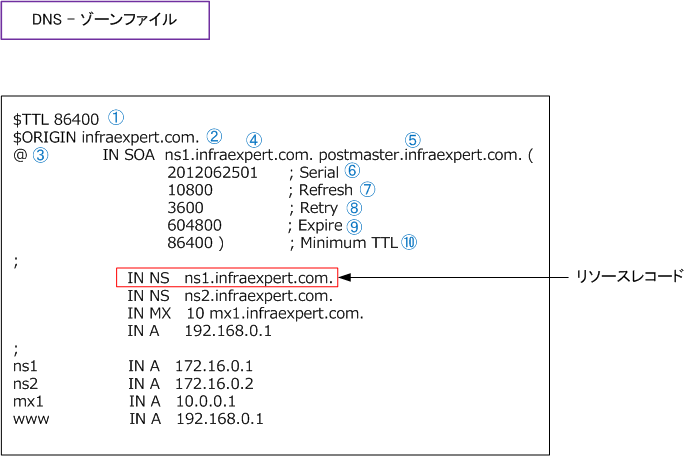
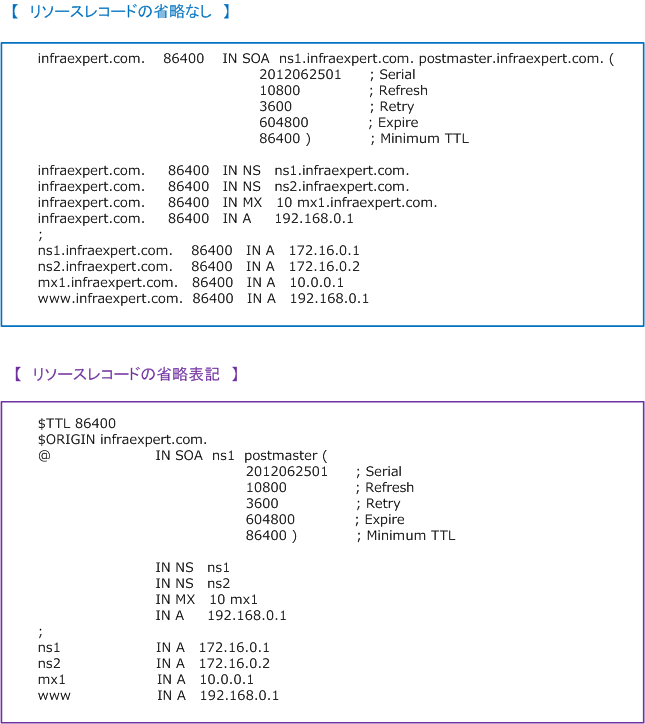
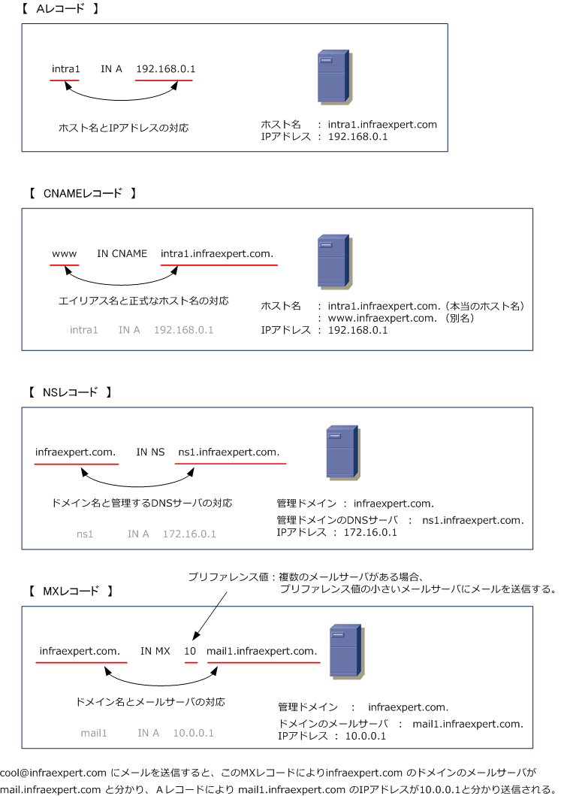
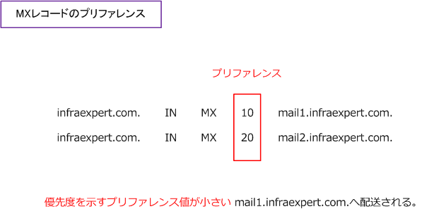

DNS zone / DNS records
※ DNSについてはじめから学習したい方は「TCP/IPをはじめから - DNSとは その1」をご参照下さい。
DNS - ゾーンファイルとリソースレコード
DNSサーバはリソースレコードと呼ばれるドメイン名とIPアドレスの対応するデータを多数持っています。 そして、リソースレコードの集合体であるデータベースは、一般的にゾーンファイルと呼ばれています。 DNSサーバのソフトウェアとして最も使用されているBINDによるゾーンファイルの書き方を解説します。

※ ゾーンファイルは省略ルールに従って省略表記可能ですが、省略しすぎると理解しにくいので上記の書き方が一般的です。
| 項番 | 項目 | 説明 |
|---|---|---|
| ?@ | $TTL | DNSサーバがゾーンファイルのデータをキャッシュする時間を指定（デフォルト：86400秒） |
| ?A | $ORIGIN | 対象ドメイン名を補う。「 IN NS ns1.infraexpert.com. 」を IN NS ns1 のように省略可。 |
| ?B | @ | ドメイン名を表す。このゾーンファイルでは @ は「 infraexpert.com 」と同じ意味を表す。 |
| ?C | ns1.infraexpert.com. | このゾーンファイルのデータを持つプライマリーDNSサーバ |
| ?D | postmaster.infraexpert.com. | このドメインの管理者のメールアドレス。管理者との連絡用に使用。 「 postmaster.infraexpert.com. 」 = 「 postmaster@infraexpert.com 」 |
| ?E | Serial ( 2012062501 ) | ゾーンファイルのバージョンを表す数字。管理者が自由に記載する。ゾーンファイル 更新日＋管理番号を表す ( YYYYMMDDNN ) の10桁使用が多い。DNS情報を更新 する場合、このシリアル番号を現在よりも大きな値として更新される必要がある。 DNS情報を更新した場合、自動で更新される場合はこの更新値を意識する必要はない。 |
| ?F | Refresh ( 10800秒 ) | セカンダリDNSサーバが、プライマリDNSサーバにゾーン情報の更新を確認する間隔の時間。 |
| ?G | Retry ( 3600秒 ) | セカンダリDNSサーバが、Refreshでゾーン情報の更新が失敗した場合に 再度Refreshを試みるまでの時間。 |
| ?H | EXPIRE ( 604800秒 ) | セカンダリDNSサーバが、ゾーン情報のリフレッシュができない状態が続いた場合、 セカンダリDNSサーバが持っているゾーン情報をどれだけの時間利用するかの時間。 |
| ?I | Minumum TTL (86400秒) | 存在しないドメイン名のキャッシュを維持する時間。存在しないドメイン名を問い合わせると キャッシュサーバは他の正規な情報と同様、この存在しないドメイン情報も指定時間保持する。 |
DNS - リソースレコードの省略表記
リソースレコードは省略した表記が可能です。そのリソースレコードの省略ルールは以下の通りです。
?@ デフォルトのTTLと同じTTLの場合、TTLの値を省略可能。デフォルトのTTLは「 $TTL 」で指定。 ?A 前行と同じラベルで始まる行は、ラベルを省略可能。 ?B ORIGINと同じドメインは省略可能。ORIGINの値は「 $ORIGIN 」で指定。
※ 明示的にORIGINを指定しない場合、そのゾーンファイルのドメイン名が暗黙に指定される。 ※ ORIGINと同じドメイン名は @ で記載される。 例 - infraexpert.com. ⇒ @ ※ ORIGINの前にホスト名を付加する場合はそのホスト名を記載して最後に「. 」をつけない。例 - www.infraexpert.com. ⇒ www ⇒ ドメイン名の最後に「. 」をつけるとFQDNと解釈される。「 . 」をつけないと ORIGIN の内容が末尾に付加されることになる。

DNS - リソースレコードの種類
リソースレコードは、以下のフォーマットであり1行に１つずつ書く必要があります。以下のリソース レコードは「Aレコード」と呼ばれるリソースレコードで「ホスト名に対応するIPアドレスの情報」を 示しています。例えば「www.infraexpert.com. のIPアドレスは 192.168.0.1です」という情報です。 「クラス」の項目にはいくつかの種類がありますが IN (= Internet) 以外は基本的に使用されません。
| ラベル | TTL | クラス | タイプ | リソースデータ |
|---|---|---|---|---|
| www.infraexpert.com. | 86400 | IN | A | 192.168.0.1 |
主なリソースレコードは以下の通りです。 なお、その他のリソースレコード一覧はこちらで確認できます。

| レコード種別 | レコード種別 （詳細） |
意味 |
|---|---|---|
| SOA | Start of Authority | ゾーンファイルの最初のリソースレコード。以下のDNSサーバの各種管理情報の指定。 ・ ドメインのDNSサーバ名 ・ ドメイン管理者のメールアドレス ・ シリアル番号 ・ 更新間隔 ・ 転送再試行時間 ・ レコード有効時間 ・ 否定的キャッシュ有効時間 |
| NS | Name Server | ドメイン名と、そのドメイン名を管理するDNSサーバを対応付けたレコード。 例：infraexpert.com. IN NS ns1.infraexpert.com. → infraexpert.com のドメインのDNSサーバは、ns1.infraexpert.com であるという意味。 |
| A | Address | ホストのIPアドレスを指定。 例：intra1.infraexpert.com. IN A 192.168.0.1 → intra1.infraexpert.com のIPアドレスは 192.168.0.1 であるという意味。 |
| PTR | Pointer | IPアドレスに対応するホスト名を指定。（逆引きで使用） 例：192.168.0.1 IN PTR intra1.infraexpert.com. → 192.168.0.1 のホスト名は intra1.infraexpert.com であるという意味。 |
| CNAME | Canonical NAME | ホストの別名を指定。構文は、「 エイリアス名 IN CNAME 本当のホスト名 」 となる。 例：www.infraexpert.com. IN CNAME intra1.infraexpert.com. → intra1.infraexpert.com の別名（エイリアス名）はwww.infraexpert.com という意味。 |
| MX | Mail exchange | ドメインのメールサーバを指定。 例：infraexpert.com. IN MX 10 mail1.infraexpert.com. → xxx@infraexpert.com宛のメールはmail1.infraexpert.comに転送すれば届くという意味。 |
| TXT | text strings | ホストへのテキスト情報を指定。 例：www.infraexpert.com. IN TXT "cool" → www.infraexpert.com ってサイトはクールなサイトという意味。 |
DNS - MXレコードのプリファレンス
MXレコードには配送における優先度を指定するプリファレンス値があります。プリファレンスによる優先度は 数字により示され、配送先が複数ある場合はより小さなプリファレンスを持つホストが優先されます。例えば、 以下の場合、メールの配送先に2つのホストがありますが、優先されるホストはプリファレンスが「10」である mail1.infraexpert.com.となり、mail1.infraexpert.com.への配送が失敗した場合は mail2.infraexpert.com. への配送が行われるようになります。

DNSSEC（Domain Name System Security Extensions）とは
DNSSECは、DNSサーバからの応答が正しいDNSサーバから応答されたものであるかを検証する仕組みです。 DNSSECは、DNSに対しデータ作成元の認証やデータの完全性を確認できるように仕様を拡張するものです。 DNSSECではDNSサーバから受け取るリソースレコードに対するデジタル署名を利用し、リソースレコード の送信者の正当性とデータの完全性を検証します。DNSSECによりデータの偽装を検知できるようになるので DNSキャッシュポイズニングの攻撃を防げるようになります。
CNAMEとは
最後にCNAMEについて詳細に解説します。例えばホスト名「 intra1 」ドメイン名「 infraexpert.com 」という Webサーバがあるとします。イントラネットまたはインターネット接続時にユーザから intra1.infraexpert.com ではなく www.infraexpert.com を指定してそのWebサーバにアクセスしてもらいたい場合、CNAMEレコードで 別名（エイリアス）を指定することで実現可能 ⇒ www.infraexpert.com. IN CNAME intra1.infraexpert.com.
← DNSとは